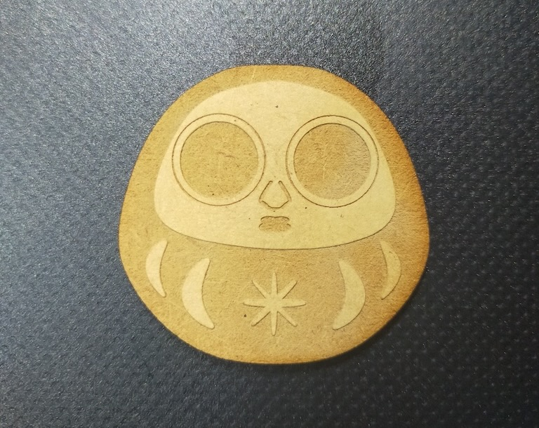
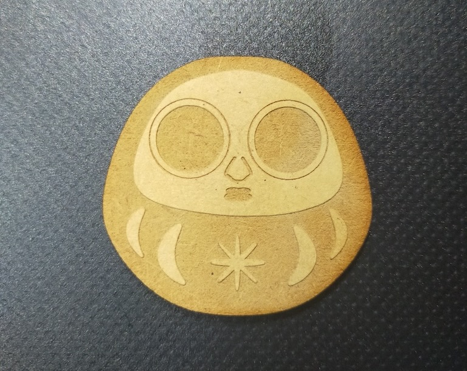

メソポだるま
説明
古代メソポタミアの美術が好きで画像を眺めていたら、大きな目の彫刻からダだるまが連想されたのでだるま顔を合体させてみた。模様に何か古代メソポタミア文字を刻みたかったので調べたところ、「天」「神」を表す「アン」の文字が星形で可愛く、意味もありがたそうだったので、
その文字をモチーフにした模様を刻んだ。
読み方のアクセントは「メソポタミア」に倣って「メ→ソ→ポ→だ→る→ま→」とする（対してうまくもない）。
＜画像＞

 

- 参考画像（彫刻）： (ドッキリ画像注意) ミステリー機密捜査員 / Mystery Secret Agent (公式)のツイート
- 参考画像（楔形文字の変遷）：地球ことば村「シュメール文字」（外部サイト）
オカルト界隈ではシュメール人＝日本人起源説が存在するが、これで日本と古代メソポタミアが約5000年ぶりに融合する…のか？
前の画面に戻る